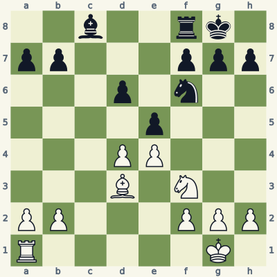
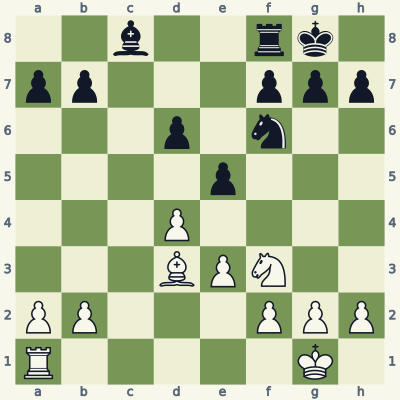
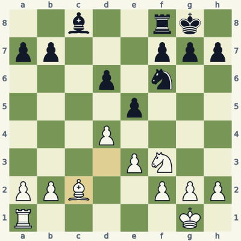
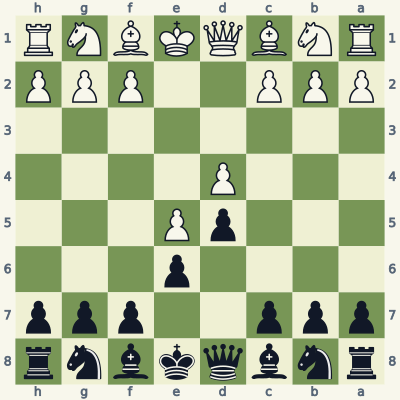
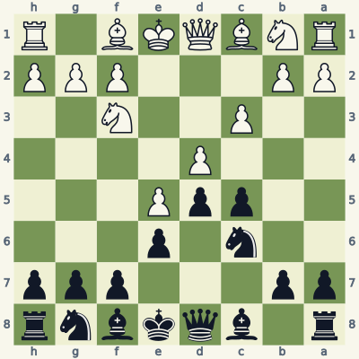
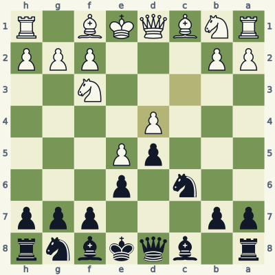
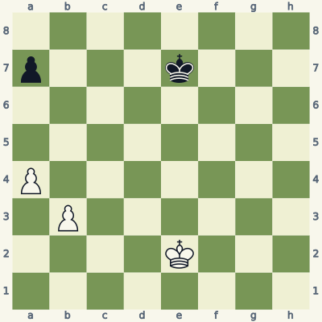
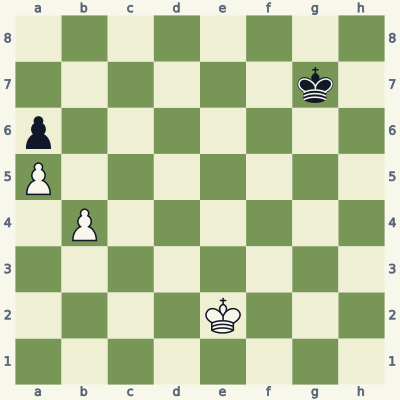
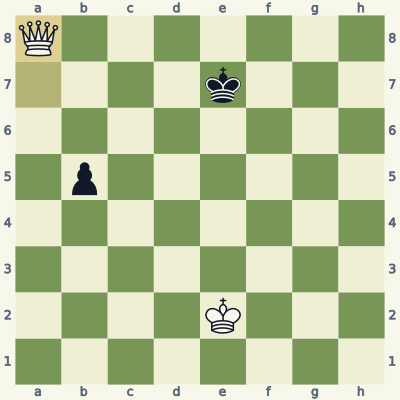

For players who know how the pieces move. Read the model, try the exercise without the answer, then explain the result aloud. Use a board and make the moves one at a time. Spend about 20 minutes per lesson; repeat it tomorrow and a week later.
Check the immediate threat, choose candidates, test the opponent's checks and captures, then inspect the final position. Some questions ask for a safe move or correct diagnosis rather than a unique best move. Sample replies illustrate ideas unless the explanation says they are forced.
Notation and replay help
K king · Q queen · R rook · B bishop · N knight. A pawn move has no piece letter. Nf3 means knight to f3; Rxc6 means rook captures on c6; + means check; # means mate; O-O means kingside castling; e8=Q means promotion. A line beginning 1... starts with Black. Diagrams face the player to move.
The PGN download loads starting positions and sample lines into a chess program. Position codes (FEN) let you recreate individual boards. The PDF and website work without an account.
Lesson 05.1
Will the pawn still be supported?
A pawn move changes the squares it attacks forever. Before advancing, inspect its new support and the squares or pieces that depended on its old location.

Model A · White to movePosition code2b2rk1/pp3ppp/3p1n2/4p3/3PP3/3B1N2/PP3PPP/R5K1 w - - 0 1
Read the position
White's e4-pawn attacks d5, so it can support a pawn that advances there.
Black's knight on f6 also attacks d5.
White's bishop on d3 protects e4, helping maintain the supporting pawn.
1. d5 a6
After d5, White gains space and fixes the central pawns. The black knight cannot win the d5-pawn for free: ...Nxd5 would allow exd5, exchanging a knight for a pawn.
The illustrative ...a6 leaves the supported center intact. This is a structural example, not a claim that d5 is best in every similar position. White has also closed lines and given up the option of keeping the central tension with d4 against e5.
Exercise B · White to move
Take five minutes. Write your reason and the opponent's reply before opening the answer.

Inspect what changed from the model.Position code2b2rk1/pp3ppp/3p1n2/4p3/3P4/3BPN2/PP3PPP/R5K1 w - - 0 1
Which pawn changed, and which square does it now defend?
Calculate d5 through Black's simplest capture.
Give a bishop move that keeps the pawn chain and avoids a possible ...e4 fork of bishop and knight.
Read the full explanation
The e-pawn is on e3. From there it attacks d4 and f4, so it supports the pawn only while that pawn remains on d4.
After d5, ...Nxd5 wins the pawn. White's e3-pawn cannot recapture on d5, and neither the bishop on d3 nor knight on f3 attacks d5.
Bc2 moves the bishop off d3, so ...e4 would no longer attack both bishop and knight. The e3-pawn continues to support d4. A full decision would also compare central captures; the essential answer is why this position calls for care before the unsupported d5 advance.
1. Bc2

Position after the sample line; the last move is highlighted.
Score your explanation: 1 point for the fact and 1 for its consequence in each answer, out of 6. At 4 or below, replay the model and revisit tomorrow.
Where the idea can fail
Support is specific to the new square. A pawn on e3 protects d4, but it does not protect d5. Count the defenders after the advance, not before it.
Use it in your own games
Before your next five pawn moves, name the square the pawn stops defending and the piece that will defend its destination. Review any move for which you could not answer.
A pawn break challenges an enemy pawn structure. Attacking the support of an advanced pawn can be more practical than attacking that advanced pawn directly.

Model A · Black to movePosition codernbqkbnr/ppp2ppp/4p3/3pP3/3P4/8/PPP2PPP/RNBQKBNR b KQkq - 0 3
Read the position
White's d4-pawn supports the advanced pawn on e5.
Black can advance the c7-pawn two squares to c5 because both intervening and destination squares are clear.
A pawn on c5 attacks d4, the base of White's central chain.
3... c5 4. c3 Nc6
...c5 challenges d4. White often reinforces with c3, and ...Nc6 adds another attacker to d4. Both sides have a clear job: Black increases pressure; White maintains the support of e5.
The break is not a promise to win a pawn immediately. White can defend, exchange, or change the center. Black should calculate what remains after each exchange and coordinate pieces with that structure.
Exercise B · Black to move
Take five minutes. Write your reason and the opponent's reply before opening the answer.

Inspect what changed from the model.Position coder1bqkbnr/pp3ppp/2n1p3/2ppP3/3P4/2P2N2/PP3PPP/RNBQKB1R b KQkq - 2 5
After ...cxd4, which white pawn can recapture on d4?
Does that recapture leave the e5-pawn unsupported?
What has changed even though the central chain remains?
Read the full explanation
White's c3-pawn can play cxd4. The original white d-pawn disappears, but the c-pawn takes its place on d4.
No. A white pawn on d4 attacks e5 regardless of which file it started on. The chain d4-e5 still exists after the exchange.
The c-file has lost both c-pawns, creating an open file, and the identity and future flexibility of the center have changed. Black must plan for the resulting position instead of claiming the base was simply removed.
5... cxd4 6. cxd4

Position after the sample line; the last move is highlighted.
Score your explanation: 1 point for the fact and 1 for its consequence in each answer, out of 6. At 4 or below, replay the model and revisit tomorrow.
Where the idea can fail
Trading a pawn off its original square does not always destroy the structure. A recapturing pawn may replace it and keep the same supporting relationship.
Use it in your own games
Replay one pawn exchange from an opening you use. Freeze the board after all recaptures and describe the open files, pawn support and new targets.
A pawn majority can create a passed pawn, but a passer is an asset rather than a result. Count the opposing king's route and any counter-pawn race.

Model A · White to movePosition code8/p3k3/8/8/P7/1P6/4K3/8 w - - 0 1
Read the position
White has two queenside pawns against one.
The b-pawn can advance beside the a-pawn and offer an exchange.
Black's king is far from the queenside at the start, but can approach as the pawns move.
1. b4 a6 2. b5 axb5 3. axb5
The illustrative sequence b4 ...a6 b5 ...axb5 axb5 leaves White with a passed b-pawn: no black pawn remains on the a-, b- or c-file to stop it.
That line demonstrates creation, not a forced win. Black could choose different moves, and this starting position is a tablebase draw with best play. To win a pawn ending you must also defeat the king's blockade; counting a two-to-one majority is not enough.
Exercise B · White to move
Take five minutes. Write your reason and the opponent's reply before opening the answer.

Inspect what changed from the model.Position code8/6k1/p7/P7/1P6/8/4K3/8 w - - 0 1
What is the idea of b5 in this more advanced position?
After ...axb5, why is a6 stronger than trying to recapture?
Count the promotion race in the sample line. What must Black also consider besides accepting the pawn?
Read the full explanation
b5 offers the b-pawn to divert Black's a6-pawn away from the a-file. White's a5-pawn can then become a passer.
The a5-pawn cannot capture a black pawn on b5: a white pawn captures diagonally to b6. Instead a6 starts a fast race, followed by a7 and a8=Q.
After ...axb5 a6 ...Kf7 a7 ...Ke7 a8=Q, White promotes before Black's king arrives. Black can decline the capture, but the exact starting position with the king on g7 is still a tablebase win for White. The distant king is a decisive detail; Model A is only a draw.
1. b5 axb5 2. a6 Kf7 3. a7 Ke7 4. a8=Q

Position after the sample line; the last move is highlighted.
Score your explanation: 1 point for the fact and 1 for its consequence in each answer, out of 6. At 4 or below, replay the model and revisit tomorrow.
Where the idea can fail
Do not assume the opponent will capture your offered pawn. Compare accepting the exchange with advancing the king or keeping the pawns locked. The defender chooses the most difficult reply.
Use it in your own games
Set up both diagrams and count moves for the pawn and defending king separately. Then play against a tablebase without assuming the defender accepts a pawn sacrifice.
All six starts and listed moves in this book were checked for legality. Stockfish 19 reviewed candidates at depth 18. Available endings with seven or fewer pieces were checked against the Lichess tablebase, including every move of the demonstrated endgame lines. A strategic sample is not a claim of unique best play.
These original, AI-assisted explanations were written around the positions and revised after checking. The lesson data and validation notes make the examples inspectable. Further reading and practice: